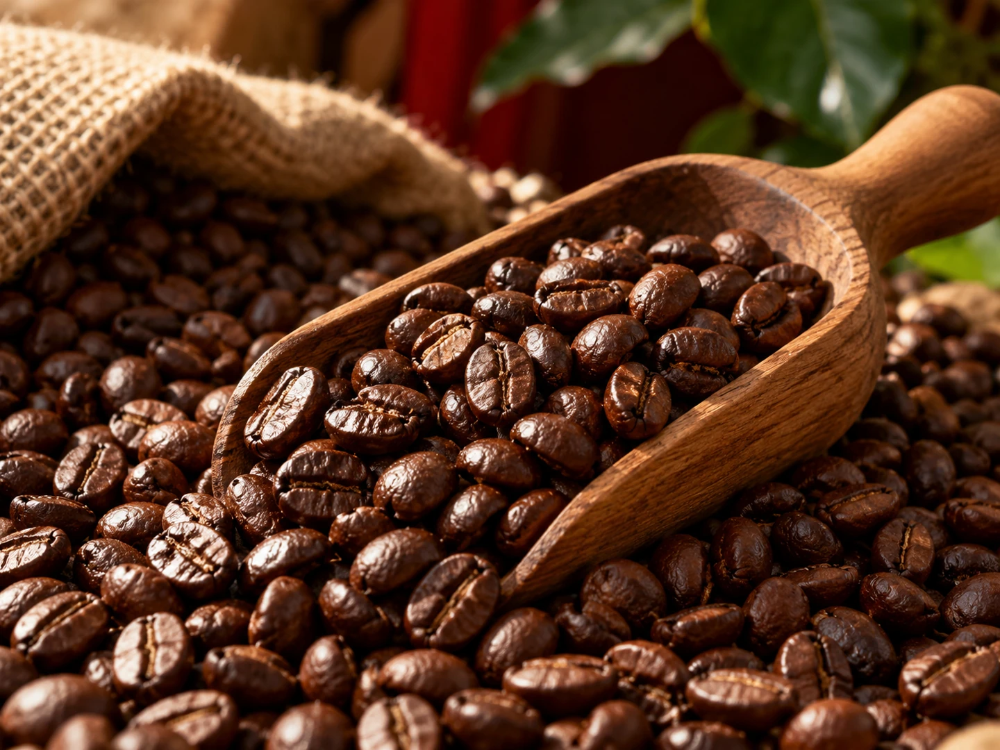

CONCEPT
赤い家の、
珈琲豆やさん
コーヒーコテージ・ビーンズハートは、名古屋市中区松原にある、赤い壁の小さな家のようなお店です。 2004年3月の開業から22年あまり、喫茶と自家焙煎の豆の販売を続けてきました。
Coffee Cottage Beans Heart
喫茶は2026年7月末で終えましたが、珈琲豆の焙煎と販売は、これまでどおり続けています。
9月には外壁の修繕工事も終わり、新しい豆が入荷しました。10月のInstagramには、こんな言葉がありました。
秋になるとコーヒーがより一層美味しい。 公式Instagram（2026年10月6日）より
家で飲む一杯のために、豆の選び方から伝えてくれるお店です。
